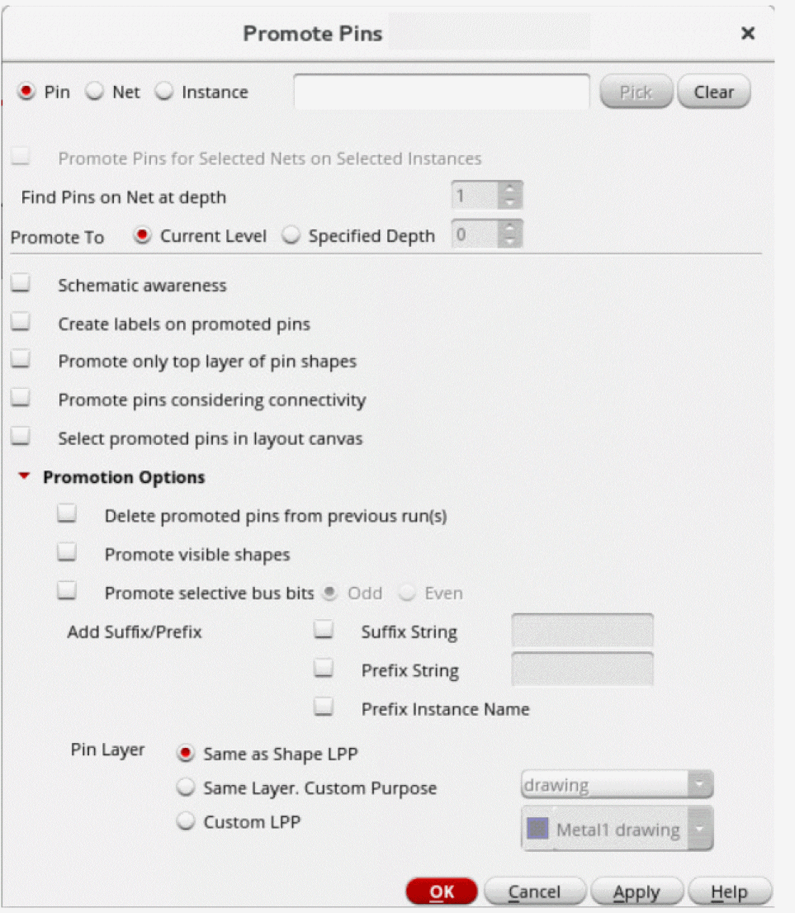

Promoting Pins in the Pin Tool
You can use the Promote Pins form to promote pins from a lower level in a design hierarchy to a higher level, which can be the current level or lower than it. The Promote Pins command supports promotion of pins in mosaics. In the following figure, Level 0 is the current level. With Block A in editable mode, a pin is promoted from Level 2 to Level 1.
To promote pins in the Pin Tool:
- Choose Plan – Pin Planning – Pin Tool. The Pin Browser is displayed.
-
Choose Create – Promote Pins. The Promote Pins form appears.
 -
Select a mode in which you want to run promote pins. The available modes are Pin, Net, and Instance.
At any point, click Clear to clear the list. - Select Promote Pins for Selected Nets on Selected Instances to filter the pins further by selecting one or more instances.
- In the Find Pins on Net at depth field, specify the depth to which the tool must traverse to search for pins.
- Set Promote To to either the level specified in Current Level or to the depth specified in Specified Depth.
- Select Schematic awareness to promote only those pins that have a corresponding schematic counterpart at the top level.
- Select Create labels on promoted pins to create pin labels for promoted pins.
- Select Promote only top layer of pin shapes to promote only those pin figures that are available on the top layer.
- Select Promote pins considering connectivity option to honor any existing connectivity of pins to top-level nets during the promotion of these pins.
- Choose Select promoted pins in layout canvas to automatically select the promoted pins on the canvas.
- Click the expand button next to Promotion Options to display options to control the settings of the promoted pins. The settings in this section are optional. If not specified, pins are promoted using the default settings.
- Select Delete promoted pins from previous run(s) to delete the pins that were promoted in the previous runs of the command.
-
Select Promote Visible Shapes to promote pins from only those layers for which visibility has been turned on in the Palette assistant. For example, to promote only those pins that are present on layer
Metal2: - Select Promote selective bus bits and specify whether Odd or Even bus pins must be promoted.
- Select Add Suffix/Prefix and specify the required Suffix String, Prefix String, or both. The specified prefix and suffix are added to the promoted pin names.
-
Select Prefix Instance Name to add the pin source paths as prefix to the promoted pin names. For example, when you promote
pinAfromI6/I2/pinA, the new pin is named asI6_I2_pinA. - In the Pin Layer section, select one of the options to specify the LPP to which the pins must be promoted: Same as Shape LPP, Same layer.Custom Purpose, and Custom LPP.
- Click Apply.
If any pin in the lower level has the must-connect-all-pins property set, the Promote Pins command copies the property along with the pin from the lower level to the current level.
When there are multiple instances of the same master in a design, a prefix of the instance name is added to the pin name. For example, consider instances I1, I2, and I3 that share the same master. When Pin A from the master is promoted, the instances are renamed as I1_A, I2_A, and I3_A.
The following images depict an example of pin promotion by selecting nets.
The Promote Pins form lets you rotate the pins and labels to match the direction of the target LPP and snap them to the nearest WSP track. The pin length is retained after snapping to the WSP tracks. This feature is applicable only for advanced node designs that have WSP tracks.
For example, consider that you want to promote a pin named clk present in Metal2 layer. Specify the pin name in the Net field and select Metal3 drawing from the Custom LPP field and run the Promote Pin command.
The following image shows the result that clk pin is promoted and also snapped to the nearest WSP track, which is Metal3.
Related Topics
Return to top